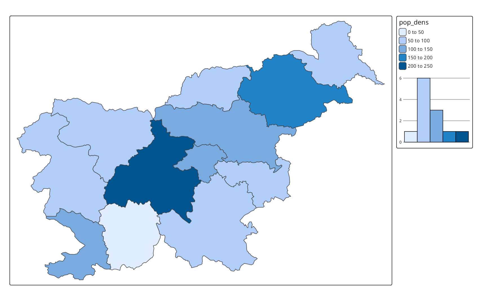
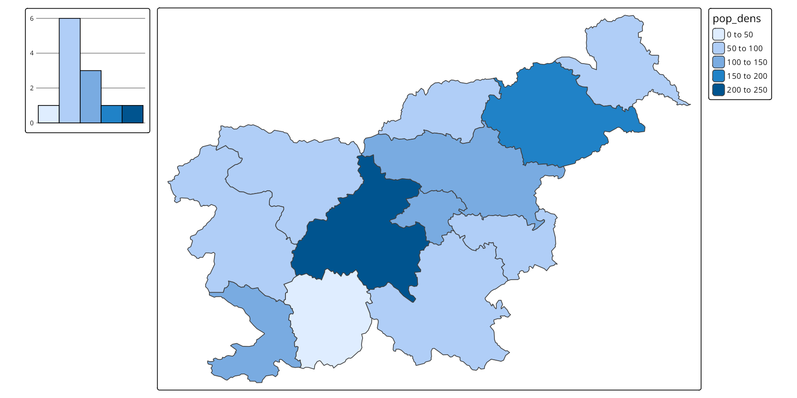
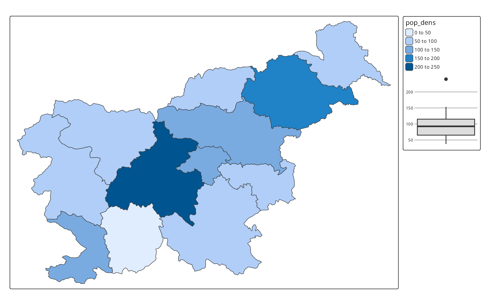
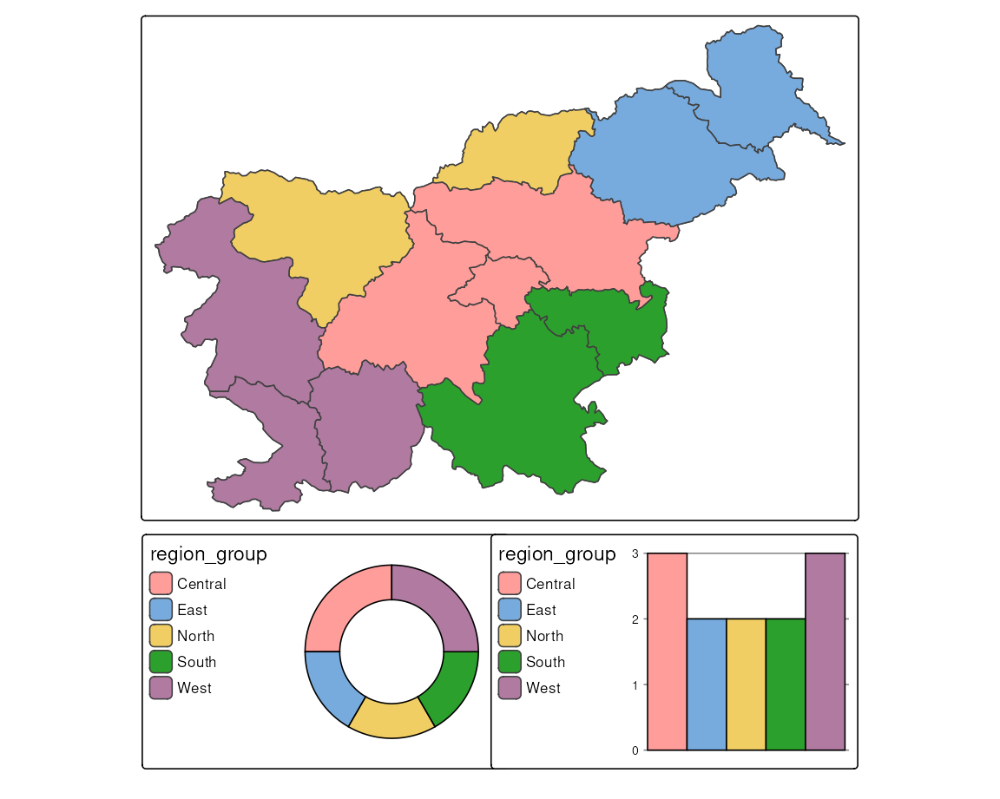
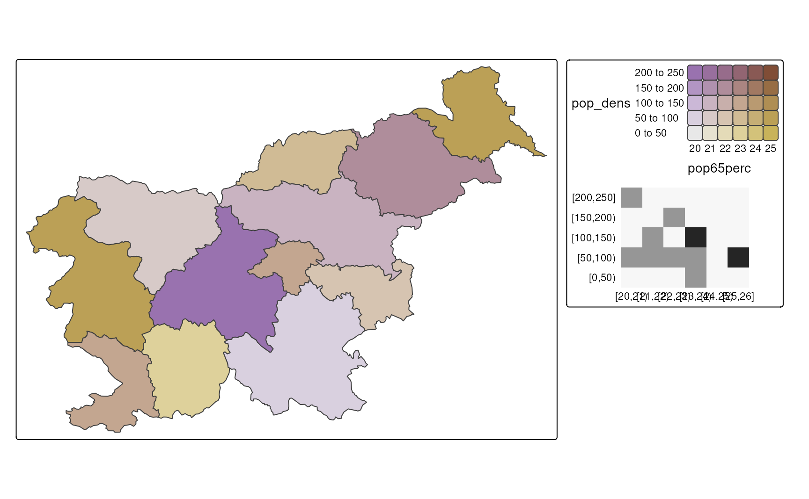
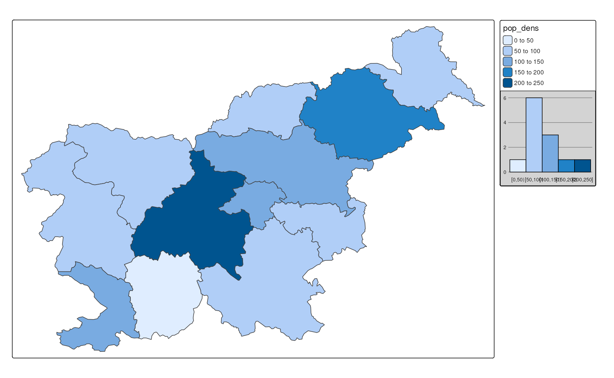

| Function | Description |
|---|---|
| tm_chart_histogram() | Histogram |
| tm_chart_box() | Box plot |
| tm_chart_violin() | Violin plot |
| tm_chart_bar() | Bar chart |
| tm_chart_donut() | Donut chart |
| tm_chart_heatmap() | Heatmap |
| tm_chart_none() | No chart |
14 Charts
Thematic maps usually represent one or more variables using colors, shapes, or sizes. Then, the map legend is used to explain the meaning of these visual variables (Section 9.1). Such a legend can be expanded (or even replaced, Section 14.4) with a chart that provides more information about the distribution of the variable values.
The tmap package provides several chart types that can be used in the map legend (Table 14.1). They are specified in one of the *.chart arguments of a layer function, e.g., fill.chart of tm_polygons(), size.chart of tm_dots(), etc. The use of a chart type depends on the type of data we want to represent, i.e., whether it is numerical or categorical, and whether it is univariate or bivariate.
For the examples in this chapter, we will use the Slovenian regions dataset that contains information about the population density, region group, and the percentage of the population aged 65 or more in each region.
14.1 Numerical data
The first group of charts is used for numerical data, i.e., data that can take any value within a range. It includes histograms, box plots, violin plots, and donut charts.
Histograms are the most common chart type used to represent the distribution of a numerical variable. They show how often each range of values occurs in the data – helping to understand which values are more common and if there are any outliers. To add a histogram to the map, we use the tm_chart_histogram() function in the fill.chart argument of the tm_polygons() function (Figure 14.1 (a)).
tm_shape(slo_regions) +
tm_symbols(fill = "pop_dens",
fill.chart = tm_chart_histogram())Such a histogram, like other charts, is automatically placed along the map legend. However, we can position them independently of the map legend using the position argument of the tm_chart_*() and tm_legend() functions (Figure 14.1 (b)).
tm_shape(slo_regions) +
tm_polygons(fill = "pop_dens",
fill.chart = tm_chart_histogram(
position = tm_pos_out("left", "center")
),
fill.legend = tm_legend(
position = tm_pos_out("right", "center")
)
)


Figure 14.2 shows additional three chart types that can be used for numerical data: box plots, violin plots, and donut charts. They can be added to the map using the tm_chart_box(), tm_chart_violin(), and tm_chart_donut() functions, respectively. As you may notice, these charts show similar messages, e.g., than the middle value range is the most common. On the other hand, box plots directly show the median and quartiles of the data, violin plots also show the density of the data distribution, and donut charts show the proportions of the data. They also have different aesthetics. Thus, the choice of the chart type depends on the message we want to convey and the aesthetics we prefer.
# box plot
tm_shape(slo_regions) +
tm_polygons(fill = "pop_dens",
fill.chart = tm_chart_box())
# violin plot
tm_shape(slo_regions) +
tm_polygons(fill = "pop_dens",
fill.chart = tm_chart_violin())
# donut plot
tm_shape(slo_regions) +
tm_polygons(fill = "pop_dens",
fill.chart = tm_chart_donut())

14.2 Categorical data
The second group of charts is used for categorical data – which can take only a limited number of values. It includes bar charts (tm_chart_donut()) and donut charts (tm_chart_bar()): bar charts show the frequency of each category, while donut charts show the proportions of each category (Figure 14.3). In the examples below, we represent the region groups of each region in Slovenia and observe that there are more regions in the “Central” and “West” groups than in the others.
tm_shape(slo_regions) +
tm_polygons(fill = "region_group",
fill.chart = tm_chart_donut())
tm_shape(slo_regions) +
tm_polygons(fill = "region_group",
fill.chart = tm_chart_bar())

14.3 Bivariate data
The third group of charts is used for bivariate data, i.e., data that contains two variables. It includes a heatmap chart (tm_chart_heatmap()) that shows how often each combination of values occurs in the data (Figure 14.4).
tm_shape(slo_regions) +
tm_polygons(fill = tm_vars(c("pop_dens", "pop65perc"), multivariate = TRUE),
fill.scale = tm_scale_bivariate(values = "purplegold"),
fill.chart = tm_chart_heatmap())

14.4 Additional chart customization
All of the charts are directly based on the visual variables from the map layer and then created using the ggplot2 package. By default, however, the charts are much simplified, not showing all the details that ggplot2 can provide, such as axis labels, titles, and various theme elements.
At the same time, we may want to customize the charts to fit our map design better or to add more information. This can be done with additional arguments of the tm_chart_*() functions, such as plot.axis.x, plot.axis.y, and extra.ggplot2. The first two are logical arguments that control whether the x and y axes are shown in the chart, respectively. The last one, extra.ggplot2, is a list of additional ggplot2 functions that are applied to the chart – for example, we may want to change the aesthetics of the chart, such as the background color as shown in Figure 14.5.
library(ggplot2)
tm_shape(slo_regions) +
tm_polygons(fill = "pop_dens",
fill.chart = tm_chart_histogram(
plot.axis.x = FALSE,
extra.ggplot2 = list(
theme(plot.background = element_rect(fill = "lightgray"))
)
))

Figure 14.6 shows a more advanced modification of the chart. It adds x and y axes, next, it adds a title to the chart, flips the chart coordinates, and changes the chart background color and title size. Next, it moves the chart to the top left corner of the map and sets its width. Having such a customized chart provides all of the important map context information: variable name, unit, ranges of the values and their related colors. Thus, we can treat it as a map legend and remove the default legend using fill.legend = tm_legend(show = FALSE).
tm_shape(slo_regions) +
tm_polygons(fill = "pop_dens",
fill.chart = tm_chart_histogram(
plot.axis.x = TRUE,
plot.axis.y = TRUE,
extra.ggplot2 = list(
labs(title = "Population density (people/sq. km)"),
coord_flip(),
theme(plot.background = element_rect(fill = "#FFC067"),
plot.title = ggplot2::element_text(size = 10))),
position = tm_pos_in("LEFT", "TOP"),
width = 20,
),
fill.legend = tm_legend(show = FALSE))